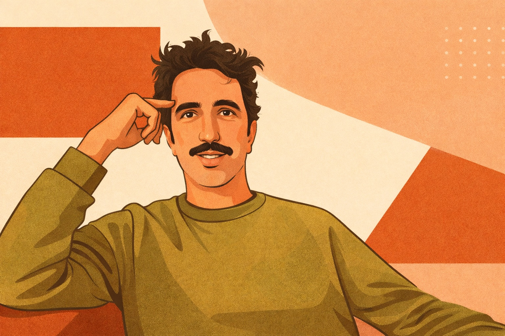
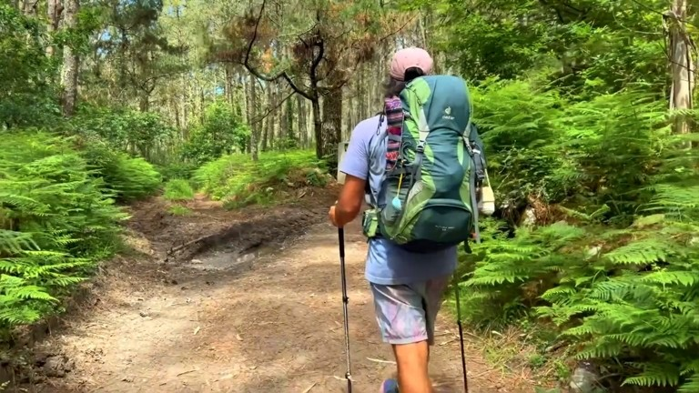

Entrepreneur · Artiste · Explorateur

Il rêvait d'un monde meilleur à travers ses projets d'entrepreneur.
Puis il a décidé de suivre ses rêves — autrement — et de partir à la rencontre du monde tel qu'il est.
Qui est-il
Marc-David Choukroun — alias Marco D Chouk — a longtemps construit.
Des projets, des équipes, des structures.
Puis quelque chose a lâché.
Ou peut-être s'est ouvert.
Depuis, il cherche autrement.
Par le corps, par la route, par les rencontres.
Il commence sa carrière dans la gestion de projets digitaux (création de sites et d'applications) au sein de l'agence de communication Ogilvy à Paris, puis au sein de sa propre structure flipin à partir de 2008.
Il développe pendant 8 ans ce qui s'impose comme le leader des circuits courts alimentaires par Internet, présent dans plusieurs pays. Un projet pionnier qui relie directement producteurs locaux et consommateurs.
Il crée Coati 1 qui prend une trentaine de participations dans des projets innovants à fort impact social et environnemental. Il intègre plusieurs fonds d'investissement et accélérateurs à impact, ainsi que l'association France Digitale où il lance France Digitale Impact.
Il quitte progressivement les structures qu'il a construites pour entrer dans une zone plus incertaine. Un voyage au Pérou agit comme un point de bascule. Le film Rêve Blanc naît de cette traversée. Puis vient le chemin de Saint-Jacques. Marco D Chouk apparaît — non pas comme un rôle, mais comme une extension.
Il lance son projet le plus ambitieux : un documentaire vivant et transmédia, un personnage sur la route, une Terre qui traverse la France. Il crée l'association La Seiche Frite pour porter ses projets artistiques à dimension écologique et sociale.
Création

Image du film Voy a Pagar y me Voy
Au printemps 2025, Marco D Chouk part sur le Camino portugais.
Un chemin traversé par la joie, la spontanéité et une forme d'absurde léger.
Entre rencontres, moments improvisés et rituels éphémères,
le film capte ce qui surgit en route : des tours de magie dans les albergues,
des histoires partagées autour d'un Kas Naranja, des couronnes de fleurs,
des "Buen Camino !" répétés à l'infini.
Et, comme un fil invisible, une phrase qui revient :
"Je vais payer et je vais partir."
Film documentaire exploratoire dont les premières images ont été tournées au Pérou. Une œuvre en construction sur la transformation intérieure et la naissance du personnage Mitchou Nami.
En productionProjet 2026 — 2027
Mitchou Nami est un personnage.
Mais surtout une façon d'entrer en relation.
À vélo, il traverse la France en tirant une Terre.
Pas une idée. Une vraie présence.
Quelque chose qui tourne, qui attire, qui interroge.
"Si tu devais sauver une seule chose sur Terre, ce serait quoi ?"
Ceux qui répondent deviennent des Sauve-Terre.
Pas des militants. Pas des experts.
Juste des gens qui nomment quelque chose qu'ils aiment assez pour vouloir le garder vivant.
Le projet grandit avec eux.
Un documentaire vivant, une collection de réponses, une autre manière de parler de la Terre.
La Seiche Frite est une structure légère.
Un espace pour faire exister des projets libres, à la frontière entre art, écologie et rencontre.
Mitchou Nami en est le premier mouvement.
Rencontrons-nous
Pour parler du projet, d'une collaboration, d'un partenariat — ou simplement répondre à la question.
mdchouk@gmail.com